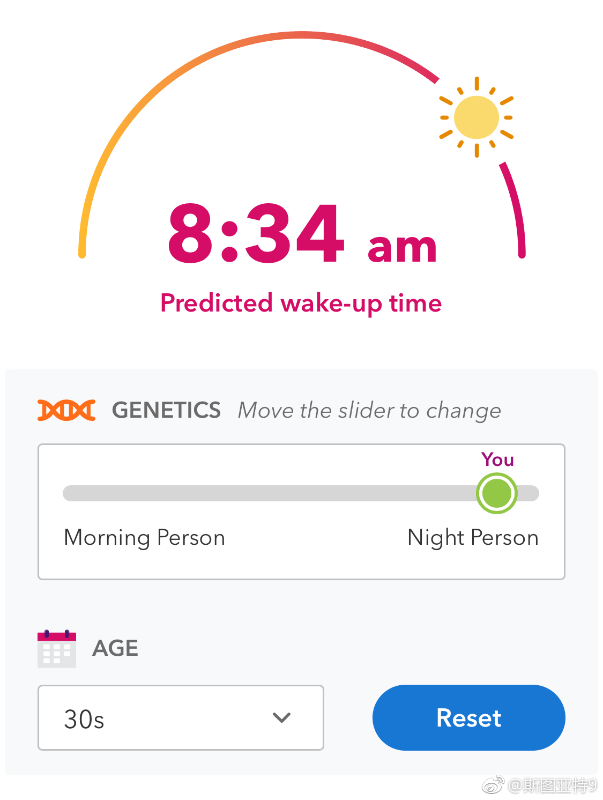
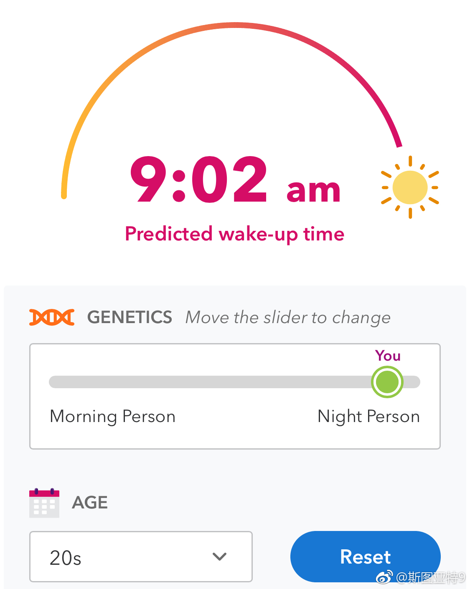

23andme说我的基因属于超级夜猫子型。预测我现在每天醒来的时间是8:34。20多岁时候醒来的时间应该是9:02……所以我就属于小时候被学校过早的上课时间摧残于是没有发挥应有的潜力的那一类么…… 
特朗普在微博上宣布他正在赢得中美贸易战，股市大跌，汇率大跌，中国人大批移民海外，这都是证明。我要是xi，我一定会让更多不好的结果都在现在发生，特朗普你不是说股市汇率移民都是你搞的？对对对，都是你搞的，还有其他所有都是你搞的，所有都和我的英明领导无关。双赢啊
我前一段想不明白为什么官媒会大张旗鼓的报道中美贸易战的严重性，仿佛经济马上就垮了一样。看外媒的报道终于明白了。外部威胁可以成为中国经济和制度内部问题的替罪羊，可以成为争议性政策的理由以及不理想结果的借口。最直接的例子就是印钱。印钱全部的后果都可以推到特朗普身上。如果出现了汇率贬值、通货膨胀、经济发展放缓、收入上涨停滞等等问题，都可以归咎于特朗普的错。这就是为什么主流媒体会大张旗鼓渲染贸易战后果的原因。很多公知和微博键盘侠跟着这个话题起舞，其实是正中舆论操纵者的下怀，心里还不自知。